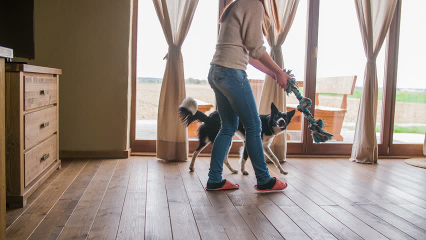

همونطور که میدونین انگلها انواع و اقسام مختلفی دارن. ویژگی مشترک بین همهی اونها اینه که تمام عمرشون یا یه بخشی از اون رو داخل، و یا روی سطح بدن موجود دیگهای میگذرونن. انگلها به عنوان محلی برای تغذیه شدن و پناهگاه به بدن میزبانشون احتیاج دارن و در طول زمان ممکنه باعث بیماریهای جدی و یا حتی مرگ اون بشن. بیماریهای انگلی سگها، انواع زیادی داره که میشه راجع بهش یه کتاب مفصل نوشت. ما توی این مطلب به طور مختصر به مهمترین و شایعترین بیماریهای انگلی، علائم انگل در سگ و روش درمان و پیشگیریشون میپردازیم.

انواع انگل در سگها
انگلها رو میشه به سه دسته اصلی داخلی، گوارشی و خارجی تقسیم کرد.
۱. شایعترین انگل داخلی سگها:
- کرم قلب
۲. شایعترین انگلهای گوارشی سگها:
- کرمهای رودهای
- تکیاختهها
۳. شایعترین انگلهای خارجی سگها:
- کنه
- جرب
- شپش
- کک
در ادامه هرکدوم از این دستهبندیها رو به طور کامل توضیح میدیم:
۱- انگل داخلی در سگ

کرم قلب سگ
کرم قلب سگ از طریق نیش پشهی آلوده وارد جریان خون اون میشه، توی قلبش رشد میکنه و بزرگ میشه.
کرم قلب باعث میشه جریان طبیعی خون توی قلب سگ بهم بخوره و قلب مجبور باشه بیشتر کار کنه و در نهایت باعث از کار افتادن اون میشه.
علائم کرم قلب
با وجود اینکه علائم زیر ممکنه در تشخیص این انگل کمک کنه اما در کل خیلی از سگهایی که میزبان این انگل هستن، هیچ علائمی از خودشون نشون نمیدن. انگل توی چک آپهایی که انجام میشه تشخیص داده شده و درمان میشه. پس مثل همیشه تاکید پتپرس روی جدی گرفتن چکآپهای سگتون هست.
علائمی که ممکنه سگتون در صورت داشتن کرم قلب از خودش نشون بده، شامل:
- سرفهی مداوم
- خستگی زیاد بعد از تمرینهای کوتاه
- بی اشتهایی (مطلب مرتبط: علت غذا نخوردن سگ)
پیشگیری و درمان کرم قلب
خوبه به این نکته توجه داشته باشین که درمان کرم قلب توی سگها پروسهی سختی داره چون در طول مدت درمان سگتون نباید فعالیت داشته باشه. درمان به صورت تزریقهایی که طی چند ماه صورت میگیره، انجام میشه و در موارد نادری ممکنه جراحی هم لازم باشه. اما پیشگیری از اون خیلی راحته.
قرص انگل سگ که به صورت ماهانه تجویز میشن میتونن به راحتی از مبتلا شدن سگتون به کرم قلب جلوگیری کنن.
کرم قلب یکی از شایع ترین بیماری های مخصوص سگ هست که گاها میتونه باعث مرگ اونا هم بشه؛ اما بیماری های خطرناک و متداول دیگه ای هم برای سگها وجود دارن که بهتره با اونا آشنا بشین.
پیشنهاد میکنم مقاله بیماری های شایع سگها را مطالعه کنین، تا با ۷ تا از شایع ترین بیماری های متداول سگها آشنا بشین.
۲- انگلهای رودهای

کرمهای رودهای در سگها
کرمهای رودهای به چند دسته تقسیم میشن که در ادامه به طور خیلی مختصر بهشون اشاره میکنیم.
الف) کرمهای قلابدار:
کرمهای قلابدار توی سیستم گوارش سگها زندگی میکنن. روش انتقال کرم در بدن سگ میتونه از طریق مادر به فرزند، خوردن اتفاقی تخم کرم و چسبیدن به پوست و ورود به بدن سگ باشه.
بعد از اینکه این انگل خودش رو به دیوارهی روده چسبوند شروع به خوردن خون سگ میکنه که این اتفاق خطرناکیه و مخصوصا توله سگها رو خیلی تحت تاثیر قرار میده.
علائم کرم قلابدار:
- اسهال
- کاهش وزن
درمان کرم قلابدار و دراوردن کرم از بدن توله سگ
دامپزشک با توجه به شرایط سگ، برای درمان و از بین بردن کرمهای حلقهای تصمیمگیری میکنه.
انواع داروی انگل سگ که برای این بیماری تجویز میشه، کرمهای بالغ رو میکشه و نمیتونه لارو کرم رو از بین ببره. پس دورهی درمانش تا زمانیکه تمام لاروها به کرم تبدیل بشن و توسط دارو از بین برن و از بدن سگ خارج بشن طول میکشه.
با تمیز نگه داشتن محیط زندگی سگ و خوراندن قرص ضد انگل سگ میتونین از ابتلای اون به کرم قلابدار جلوگیری کنین.
اگر به بیماری های انگلی در سگت مشکوکی، حتما با دامپزشک آنلاین مشورت کن
عکس مدفوع، استفراغ یا پوست سگ رو برای دامپزشک آنلاین ارسال کن تا مطمئن بشی مشکلی سلامتی هاپوی کوچولوت رو تهدید نمیکنه.


ج) کرمهای گرد (لولهای):
این کرمها یکی از شایعترین کرمهای رودهای هستن. تولهسگها بیشتر از سگهای بالغ در برابر این نوع انگل آسیبپذیر هستن. این انگل خیلی راحت به سگهای دیگه منتقل میشه پس در صورتی که سگتون به این انگل مبتلا هست، از بقیهی سگها جدا نگهش دارید.
علائم کرم گرد:
- اسهال
- استفراغ سگ
- سوءتغذیه
- سرفه
روش درمان کرم گرد
روش درمان کرمهای گرد شبیه به روش درمان کرمهای قلابدار هست و تا زمانی که تمام لاروها به کرم تبدیل بشن و طی پروسهی درمان از بین برن، طول میکشه.
د) کرمهای نواری:
یکی از انواع انگلها هستن که تشخیصشون برای افراد غیر متخصص هم خیلی سخت نیست. شما میتونین کرمهای ریزی در مدفوع سگ یا اطراف مقعد سگتون ببینین که همون کرمهای نواری هستن.
این نوع از انگلها معمولا مشکل جدیای برای میزبان خودشون ایجاد نمیکنن؛ اما خارش در ناحیه مقعدی سگ از مهمترین علائم انگل در سگ هست.
از جمله علائم کرم و نشانه های انگل در سگ لیسیدن زیاد یا کشیدن باسنش به زمین هست.
جالبه بدونین کرمهای نواری از طریق ککها یا خوردن گوشت خام وارد بدن سگ میشن.
روش انگل تراپی و درمان کرم نواری در سگ
برای درمان کرم نواری روشهای مختلفی مثل مصرف داروی ضد انگل سگ و تزریق وجود داره.
کرمهای نواری با یکبار مصرف دارو از بین میرن ولی احتمال ابتلای دوباره به این انگل وجود داره.
پیشگیری از انگل کرم نواری
- استفاده از روشهای مقابله با ککها
- جلوگیری از شکار کردن
- جلوگیری از خوردن گوشت خام
ه) کرمهای شلاقی:
این کرم با بو کشیدن یا لیسیدن سطح آلوده مثل زمین وارد بدن سگ میشه. اگه سطح مدفوع سگتون حالت مخاطی پیدا کرده، سگتون مشکوک به داشتن کرم شلاقیه. بهتره هرچه زودتر به دامپزشک مراجعه کنین. این نوع انگل معمولا باعث مرگ میزبانش نمیشه.
علائم کرم شلاقی:
- کاهش وزن شدید
- کم خونی
درمان کرم شلاقی:
این نوع انگل مقاومت بیشتری نسبت به سایر انگلهای رودهای داره؛ در نتیجه در صورتی که با داروهایی که براش تجویز شده، آشنا نبودین زیاد متعجب نشین.
در صورتی که سگتون از ضد انگل برای کرم قلب استفاده میکنه حتما دامپزشک رو مطلع کنین.

انگلهای تک یاختهای
یکی دیگر از انواع انگلهای رودهای، «انگلهای تک یاختهای» هستن. این انگلها میتونن بدون اینکه علائم خاصی داشته باشن توی سیستم گوارش سگها زندگی کنن. زمانی که سگ دچار استرس شد یا به نوعی سیستم ایمنی بدنش ضعیف شد، سگ رو با مشکلات جدیدی مواجه میکنن.
از انواع شایع انگلهای تک یاختهای:
- ژیاردیا
- کوکسیدیا
۳- انگلهای خارجی

الف) جرب گوش یا گال
جرب گوش یا اتودکتس نوعی انگل هست که توی گوش سگ زندگی میکنه و نشونهاش دونههای ریز سیاه داخل گوش سگ هست. این انگل به شدت واگیرداره و از یه حیوون به حیوون دیگه به راحتی منتقل میشه.
البته جرب نمیتونه به انسان منتقل بشه اما باعث آزار و اذیت سگتون میشه و باید هرچه زودتر درمان بشه.
برای اینکه بهتر درک کنین سگی که گال داره چه حسی داره، میتونین تصور کنین که چندتا پشه توی کانال گوشتون گیر افتادن و هر چند دقیقه یه بار شما رو نیش میزنن. توی مقاله جرب سگ به صورت خیلی کامل در مورد این انگل بیماریزا صحبت کردیم که اگر نیاز به اطلاعات بیشتری در موردش داشتین، میتونین اون مقاله رو هم بخونین.
علائم انگل جرب در سگ
اگر دیدین سگتون علائم زیر داشت:
- سرش رو به شدت به یه طرف تکون میده.
- سعی میکنه با پنجههاش گوشش رو بخارونه.
- یا ترشحات قهوه ای رنگ داخل گوشش وجود دارن.
ممکنه بیماری گال داشته باشه. باید به دامپزشک مراجعه کنین و اون با آزمایش مشکل رو تشخیص میده.

ب) کنه
کنه همونطور که به انسان میچسبه میتونه به سگها هم بچسبه.
بیماریهایی خطرناکی هستن که از طریق کنه به سگ منتقل میشن، به همین خاطر چیزی که در مورد ابتلای سگتون به انگل کنه خیلی حیاتیه تشخیص زودهنگامش هست. اما خبر خوب اینه که کمی طول میکشه تا بیماریهایی که تحت تاثیر کنه ایجاد میشن به سگ منتقل بشن.
بیماریهایی که از طریق کنه به سگتون منتقل میشه شامل:
- لایم
- تب کوههای راکی
- آناپلاسموز
- بابزیا
- بارتونلا
- ارلیشیوز
علاه بر اینها کنه از خودش نوعی ماده سمی منتشر میکنه که برای میزبانش خطرناکه و همینطور زخمهایی که توسط کنه روی بدن میزبان ایجاد میشن ممکنه عفونت کنن و باعث مشکلات دیگهای بشن. (مطلب مرتبط: زخم پوست سگ)
بیشتر از ۸۰۰ نوع کنه در طبیعت وجود داره. بعضی از انواع اون میتونن باعث فلج شدن سگ هم بشن.
خب حالا که فهمیدیم موجودی به این کوچیکی چقدر میتونه خبیث باشه بیایید در مورد درمان و پیشگیری از ابتلای سگمون بهش هم کمی یاد بگیریم.
تشخیص کنه
کنه رو از زخمهایی که روی بدن میزبانش جا میگذاره شناسایی میکنن و همینطور خودش هم قابل مشاهده هست. کنههایی که تازه به بدن سگتون چسبیده باشن صاف هستن ولی با گذشت زمان و تغذیه شدن از بدن سگتون حالت گردتری پیدا میکنن و بزرگ میشن.
درمان کنه
برای درمان کنه انواع محصولاتی مثل اسپری و پودر وجود داره. بعضی از محصولاتی که برای کنه ساخته میشن میتونن برای درمان کک هم مفید باشن. برای انتخاب بهترین روش با دامپزشکتون مشورت کنین.
نکتهی مهم: اگه حیوون دیگهای توی خونه نگهداری میکنین حتما در موردش به دامپزشک بگین چون ممکنه در انتخاب روش درمان تاثیر زیادی داشته باشه.

مراقبت از سگ در برابر کنه
قدم اول برای مراقبت از سگتون در مقابل کنه اینه که از بردنش به جاهایی که علفهای بلند داره یا لابهلای چوبهای بریده شده و محیطهایی که احتمال وجود کنه دارن، خودداری کنین.
قدم دوم اگه زمانی رو بیرون از خونه سپری میکنه، زمان بگذاریم و دنبال کنههای احتمالی که بهش چسبیدن باشیم و هرچه سریعتر از بدنش جداشون کنیم. البته یادتون باشه که باید قبلش کنه رو با اسپری کردن الکل به بدن سگ بیحس کنین وگرنه زوائد دهانی اش توی بدن حیوون به جا میمونه و باعث واکنش های آلرژیک میشه.
حتما و حتما از دستکش استفاده کنین چون بعضی از بیماریهایی که بالاتر بهش اشاره کردیم از طریق زخمی که ممکنه روی دستتون باشه فورا به خودتون هم منتقل میشه.
اگه تعداد زیادی کنه پیدا کردین بهتره که خودتون کاری نکنین و هرچه سریعتر به دامپزشک مراجعه کنین.
قدم سوم مراجعه به دامپزشک برای تشخیص بیماریهای احتمالیه که ممکنه از طریق کنه به سگتون منتقل شده باشه. (مطلب مرتبط: کک و کنه سگ)

ج) کک در سگها
ککها یکی از انگل های شایع سگ هستن. دورههای مختلفی از تکامل رو روی بدن میزبان طی میکنن و باعث عفونت پوستی و خارش شدید میشن. علاوه بر این مشکل جدیتری که ایجاد میکنن، کرمهای نواری هستن که از طریق ککها وارد بدن سگ میشن. ککهایی که گربه و سگها رو میزبان خودشون قرار میدن زیاد به خون انسان علاقهای ندارن ولی در صورتی که جمعیتشون خیلی زیاد بشه و گرسنه بمونن میتونن سلامت خودتون رو به خطر بندازن.
در صورتی که جمعیت ککها به تعداد بالایی برسه میتونه باعث کمخونی میزبانش بشه.
درمان کک
برای درمان این انگل سگ اسپری و شامپوهای مخصوصی وجود داره که میتونین تهیه کنین. یادتون باشه که لارو کک باید به کک تبدیل بشه تا با شامپو از بین بره؛ پس با یک بار استفاده از محصولات کنترل کک، سگتون رو برای همیشه از شر ککها خلاص نکردین. دورهی درمان رو حتما کامل کنین.

د) شپش
شپش سگ انگلهایی هستن که رفتاری شبیه به جرب دارن، توی پوست و موی سگ زندگی میکنن و باعث ناراحتی و اذیتش میشن. شپشهای ماده تخمهاشون رو روی موهای میزبان جایی نزدیک به پوستش میگذارن و این تخمها با شامپو و شستن معمولی از موها جدا نمیشن.
علائم شپش
در صورتی که سگتون شپش گرفته باشه ممکنه علائم زیر رو نشون میده:
- خاراندن زیاد
- گاز گرفتن بدن خودش
- زبر و ضخیم شدن موها
در صورتی که وضعیت شپش گرفتن سگ حاد باشه
- وجود زخمهای ریز روی پوست
- نمدی شدن موها
تشخیص شپش
معمولا برای تشخیص وجود شپش لای موهای سگ رو میگردن و تخمها یا خود شپش رو میبینن. بعضی از انواع شپش خیلی آروم حرکت میکنن و بعضی دیگهشون فعالتر هستن. در هر حال امکان دیدن هر دو نوع شپش با چشم غیر مسلح وجود داره.

درمان شپش
- استفاده از شونههایی که موهای چسبیده به هم به علت تخم گذاری رو جدا کنه. با این روش شپشهایی که از تخم بیرون اومدن از بین نمیرن اما حداقل محیط مناسبی که برای شپشهای جدید وجود داشته، از بین میره.
- استفاده از شامپو، قلاده و اسپریهای مخصوص برای از بین بردن شپش و انگل پوستی سگ
- ۷ الی ۱۰ روز بعد از اولین درمان، دور بعدی درمان رو باید شروع کنین تا شپشهایی که تازه از تخم بیرون اومدن از بین برن.
- تا دو هفته بعد از دیدن آخرین شپشی که روی بدن سگتون دیدین به گشتن با دقت لابه لای موهای سگتون ادامه بدین چون شپشها تا ۲ الی ۳ هفته توی تخم میمونن و موج بعدی شپشها ممکنه در راه باشه.
- در صورتی که میزان شپش سگتون زیاد بوده و با خارندن زیاد پوست خودش رو زخم کرده، دامپزشک تجویز میکنه تا ازعفونتهای احتمالی جلوگیری کنه.
تجربیات خودتون رو با ما به اشتراک بگذارید
در این مطلب در مورد انواع بیماری انگلی و علائم انگل در سگ ها صحبت کردیم و معروفترین اونا رو به شما معرفی کردیم. دیدیم که بیماریهای انگلی به سه دسته انگلهای داخلی، رودهای و خارجی تقسیم میشن و هرکدوم از اونا هم میتونن باعث بروز بیماریهای مختلفی بشن.
توجه به مراقبتهای بهداشتی، نظافت مستمر، واکسیناسیون مرتب و چک آپ و معاینه دامپزشک از جمله عواملی هستن که میتونن از بروز این بیماریها پیشگیری کنن.
به عنوان صاحب سگ تا حالا با این بیماریها روبرو شدید؟ آیا تا حالا سگتون به این بیماریهای انگلی مبتلا شده؟ آیا بیماری انگلی شایعی وجود داره که در این مطلب بهش اشارهای نشده باشه؟ لطفا برای ما کامنت بگذارید و تجربهتون رو با ما و خوانندگان به اشتراک بگذارید تا ما هم از تجربیات و نظرات شما استفاده کنیم.


سلام سگ من تا دیروز هیچ زائده سیاه نرگی رو بدنش نبود ولی امروز ک رفتم بهش غذا بدم دیدم ک بدنش و مخصوصا روی گوشش بر شده از زائده های سیاه رنگ اندازه لپه
مشکلش چیه؟
سلام امیر عزیز،
احتمال بیماری پوستی و انگلی بیشتر از بقیس با توجه به علائمی که گفتین. برای اینکه بشه دقیقتر تشخیص داد علت چیه باید اطلاعات و علائم بیشتر به همراه عکس ازش داشته باشیم تا بتونیم راهنماییتون کنیم. میتونین درصورت امکان حضوری به بیمارستان دامپزشکی مراجعه کنین و اگه نه میتونین مراحل ثبت مشاوره آنلاینو انجام بدین و باهامون درارتباط باشین:
با مشاوره دامپزشکی آنلاین کنار شما هستیم (سوال مستقیم و تخصصی از دامپزشکان پت پرس)
ممنونم بابت مطالب مفیدتون.یه سوال داشتم.سگ من ۶ ماهشه و چن روزی میشه که داخل مدفوعش موکوس دیدم.اول خیلی کم بود ولی رفته رفته داره زیاد میشه.چند دقیقه بعد از هر بار مدفوع کردن که موکوسی نیست مدفوع موکوسی رو دفع میکنه.خیلی نگرانم اگه امکانش هست راهنماییم کنین.ممنونم
سلام فاطمه جان،
دفع موکوس در مدفوع بیشتر نشونه التهاب و آزردگی دستگاه گوارشه. بهتره برای بررسی دقیقتر حضوری به بیمارستان دامپزشکی مراجعه کنین.
سلام به تیم خوب پت پرس.سگ من از یکماه پیش روی بدنش کنه پیدا کردم.دامپزشک یه قطره معرفی کردن و گفتن به پوست بدنش بزنید اینکارو کردیم ولی تاثیری نداره و اطراف دمش زخم و جای نیش کنه هست و خودشو زیاد میخارونه خیلی نگرانشم باید چیکار کنم
سلام الیسا جان،
احتمالا دچار حساسیت پوستی شده. لازمه براش معاینه بالینی انجام بشه، درصورت امکان حضوری به بیمارستان دامپزشکی مراجعه کنین و اگه امکانش رو ندارین اطلاعات بیشتر رو از طریق مشاوره آنلاین در اختیارمون بذارین تا بتونیم بهتر راهنماییتون کنیم:
با مشاوره دامپزشکی آنلاین کنار شما هستیم (سوال مستقیم و تخصصی از دامپزشکان پت پرس)
سلام
دو سه هفته پیش،بطور اتفاقی متوجه خاروندن بدن و خصوصا سر و گردن توله
کوچولوم شدم و فکر کردم عادی باشه،تا اینکه دو سه روز بعد،لابلای موهای سرش یه چیز تیره رنگ کوچیک،که خیلی سریع هم غیبش زد توجهم رو جلب کرد،بردمش حمام و وقتی توی آب بود دیدم موجودات ریزی از بدنش که تو آب بود بطرف سر حیوون میرن بالا،دونه دونه و بسختی ۹تا ازشون رو از لای موهای سر و گردن درآوردم و به دامپزشکم که نشون دادم گفت کک بوده و ظاهرا تو پارک محلمون که نیم ساعتی روی زیرانداز خوابیده بود از چمن های زیر حصیر منتقل شده بودن،چون حیوونای ولگرد دایما،روی چمنهای پارک میخوابن.فعلا هم دوره درمانش رو داره میگذرونه….
سلام امیرحسین عزیز،
ممنون که تجربتون رو با ما به اشتراک گذاشتین.
بله احتمال زیاد همون کک بوده. جای نگرانی نداره همون اقدامات درمانیو دنبال کنین مشکلی پیش نمیاد.
سلام خانم دکتر
دیروز علائم زیر رو در سگ یکی از دوستانم مشاهده کردم:
عطسه
لرزش دست
کثیفی گوشه چشم طوری که انگار زخم شده
افزایش دفعاتی که حیوان نفس عمیق میکشه
افزایش ریزش مو طوری که روی بدنش کاملا مشهود بود
لیسیدن پنجه ها
گاز گرفتن مو های خودش مخصوصا ناحیه ران طوری که انگار دنبال شپش یا کنه باشه
این سگ انگل زدایی و واکسینه نشده درضمن گاهی اوقات موش صحرایی شکار میکنه
لازم به ذکره که سگ نر، ۱/۵ ساله (حدودن) و ظاهرن نژاد ژرمن میکس هست
این سگ تو روستا زندگی میکنه و امکان مراجعه به دامپزشک رو نداره
نکته عجیبی هم که دیدم این بود که نه به صدا نه به حضور گربه هیچ واکنشی نشون نمیداد
یه چیز دیگه احتمال اینکه مسموم شده باشه هم زیاد هست مثلا سگ قبلی همین فرد رو مسموم کردن و متاسفانه مرد
باتشکر از لطف شما
سلام علیرضای عزیز،
مشکلش نیاز به بررسی بیشتر داره. اطلاعات بیشتر رو از طریق مشاوره آنلاین در اختیارمون بذارین تا بتونیم بهتر راهنماییتون کنیم:
با مشاوره دامپزشکی آنلاین کنار شما هستیم (سوال مستقیم و تخصصی از دامپزشکان پت پرس)
سلام وقت بخیر
سگ من چندوقتی هست بیمار هست بیحال هست مدفوع به ندرت میکند و خیلی کسل است ازمایش خون داده مثل اینکه در خونش انگل هست هنوز جواب ازمایش به دامپزشکش داده نشده خطرناک هست؟!
ممنون
سلام پرند جان،
اگه جواب آزمایش دستتونه میتونین از طریق مشاوره ی آنلاین در اختیارمون بذارین به همراه علائم دقیق و تاریخچه ی سگتون تا بتونیم کمکتون کنیم:
مشاوره دامپزشکی آنلاین حیوانات خانگی- سوال مستقیم و تخصصی از دامپزشک پت پرس
بستگی به نوع انگل، تعدادش و آسیبی که وارد کرده، خطرناک بودن یا نبودن بیماری میتونه متفاوت باشه.
سلام خسته نباشید سگ من پامرانینه و ۴۹ روزشه رویه دستاشه یکم قبل تر از پنجه هاش گوشت سیاه چسبیده یکیش بزرگتره دستم زدم بهشون دردش نیومد اصلا دستشو نکشید بعضی وقتا میخواد دستشو گاز بگیره
سلام آیلین جان،
مشکلش نیاز به بررسی بیشتر داره. اطلاعات بیشتر رو از طریق مشاوره آنلاین در اختیارمون بذارین تا بتونیم بهتر راهنماییتون کنیم:
با مشاوره دامپزشکی آنلاین کنار شما هستیم (سوال مستقیم و تخصصی از دامپزشکان پت پرس)
درود به تیم پت پُرس،یه سوال داشتم سگ زمانیکه خودش رو گاز میگیره پشت خودش رو یا دست وپا رو هم گاز میگیره هم میخارونه خیلی زیاد که بعضی اوقات زخم میشه علتش چی میتونه باشه،نگاه کردم شپش پیدا نکردم،ممنون وتشکر از تیم پت پُرس
سلام عباس عزیز،
این علائم نشاندهنده ی بیماری پوستی هست که میتونه با کک یا شپش همراه باشه یا نباشه و پیدا کردنشون یکم چالش برانگیزه.
پیشنهاد من اینه که درموارد بیماری پوستی برای تشخیص دقیق که نیازمند انجام یکسری تست هستش حضوری به دامپزشک مراجعه کنین و اگه امکانش رو ندارین مراحل ثبت مشاوره ی آنلاینو انجام بدین تا مشکلش دقیق تر بررسی بشه.
مشاوره دامپزشکی آنلاین حیوانات خانگی- سوال مستقیم و تخصصی از دامپزشک پت پرس
سلام تشکر از توضیحات خوب و جامعتون یک سوال داشتم این بود که من سگ بدنش رو بسیار زیاد می خارونه زخم ریز داره اما شپش یا کک روی پوستش نبوده ممنون میشم اگر کمک کنید
سلام تشکر می کنم شما می توانید با دامپزشک های ما در ارتباط باشید
مشاوره آنلاین دامپزشکی
باسلام من سگ.تریر نر دارم ۶سالشه..چندماه پیش روی پهلوش ۱دونه زیرپوستی قد۱لپه دیدم به مرور بزرگ شدحالاقد۱نخود درشت شده.وچندجای دیگه کمروپهلوهاش هم زده.دونه ها درد نداره اماسگم بیشتر وقتها لرز داره .اشتهاشم معمولی.میشه راجب به دونه هاراهنمایی بفرمائید.ممنون میشم
سلام دوست عزیز باید عکس ضایعات رو به همراه موارد دیگه ای که ازتون خواسته میشه از طریق صفحه دامپزشک آنلاین برای دامپزشکمون ارسال کنیدتا ببینن و راهنمایی بشید